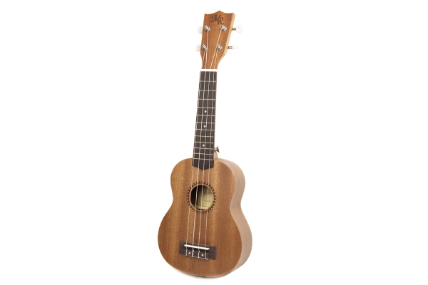

укулеле сопрано

Укулеле сопрано – самая маленькая из всего семейства, она же одна из самых популярных. Действительно, этот инструмент любят за портативность, поэтому сопрано полюбилась многим музыкантам.
Строение укулеле сопрано
Размер укулеле сопрано составляет примерно 53 сантиметра, либо 21 дюйм в длину с мензурой в 33 сантиметра. Гриф имеет от 12 до 14 ладов. Ширина грифа укулеле сопрано у верхнего порожка составляет примерно 35 мм. При таких параметрах, укулеле можно легко удерживать в руках при игре, не используя ремень. Звучание не очень громкое, изящное, направленное как бы в себя, почти что игрушечное. Все из-за небольшого корпуса, который слабо резонирует. Но такого звучания вполне хватает для аккомпанемента своему пению на небольших камерных концертах.
Обратите внимание, что взрослому человеку может быть не очень удобно справляться с небольшим грифом, расстояния между ладами на котором не такие уж большие. Возможно, это станет препятствием при игре сложных композиций, которые не ограничиваются одними аккордами. С другой стороны, для обучения ребенка такой инструмент подойдет идеально – небольшие размеры означают слабое натяжение струн, которые легко зажимать, а небольшие лады помогут ребенку дотягиваться до нижних частей грифа без особых проблем.